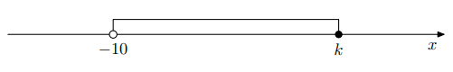

Rozważamy przedziały liczbowe \((- \infty, 5)\) i \([ -1, +\infty)\). Ile jest wszystkich liczb całkowitych, które należą
jednocześnie do obu rozważanych przedziałów?
Część wspólna to przedział \([ -1, 5)\). Liczby całkowite w nim to: \(-1, 0, 1, 2, 3, 4\) – razem 6. Odp. A.
Zad. 2
Różne (maj 2021 – zad. 5)
Różnica \(0,(3) - \dfrac{23}{33}\) jest równa
\(0,(3)=\frac{1}{3}\). Zatem \(\frac{1}{3}-\frac{23}{33}=\frac{11}{33}-\frac{23}{33}=-\frac{12}{33}=-\frac{4}{11}\). Odp. D.
Zad. 3
Różne (czerwiec 2018 – zad. 3)
Wskaż liczbę spełniającą nierówność \((4-x)(x+3)(x+4)>0\).
Miejsca zerowe: \(-4,-3,4\). Analiza znaków daje dodatnie na \((-4,-3)\cup(4,\infty)\). \(x=-2\in(-4,-3)\). Odp. D.
Zad. 4
Różne (czerwiec 2018 – zad. 5)
Na rysunku przedstawiony jest przedział \((-10, k)\), gdzie \(k\) jest liczbą całkowitą. Suma wszystkich liczb
całkowitych należących do tego przedziału jest równa 21.

Stąd wynika, że
Zad. 5
Różne (czerwiec 2018 – zad. 7)
Liczbę \(\frac{2^{24}}{1111}\) można zapisać w postaci nieskończonego ułamka dziesiętnego okresowego.
Dwudziestą cyfrą po przecinku jego rozwinięcia jest
\(1111=11\cdot101\). Mianownik ma czynniki różne od 2 i 5, więc rozwinięcie okresowe. Analiza okresu daje cyfrę 6 na pozycji 20. Odp. D.
Zad. 13
Różne (zbiór zadań CKE – zad. 26.1)
Temperatura spada o \(0{,}6^\circ\text{C}\) na każde \(100\,\text{m}\) w górę i rośnie o \(0{,}6^\circ\text{C}\) na każde \(100\,\text{m}\) w dół.
W Zakopanem (1000 m n.p.m.) było \(13^\circ\text{C}\).
Na Rysach (2499 m n.p.m.) temperatura nie przekraczała \(5^\circ\text{C}\).
W Białce Tatrzańskiej (650 m n.p.m.) temperatura była równa \(16{,}5^\circ\text{C}\).